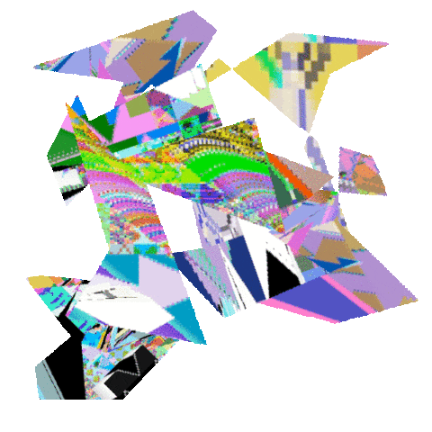

gif by hellocatfood (aka Antonio Roberts)
Glitch Art
A "glitch" is an unexpected moment in a system that calls attention to that system, glitch art is anytime an artist intentionally leverages that moment, by either recontextualizing or provoking glitches. The keyword here is "intentionally", glitch art is always done on purpose but the impetus behind it varies. For some artists, these are purely formal explorations into the inherent aesthetics of the digital medium. Others are more interested in the glitch's political potential, as a tool for commenting on or questioning the systems which mediate our lives. Some artists are interested in glitch's psychedelic potential, others see the glitch as a means to explore themes of failure, chance, memory, entropy, nostalgia, identity, etc. Below is only a small (some what arbitrary) sampling of work by artists from this community:
How To / Why Make Glitch Art
It’s been said that data is the new oil; data is mined and fuels the apps and services we use every day. We hear about risks to our data privacy, online tracking, data leaks, etc… but what is data really? One group of artists well versed in the raw data that makes up our digital world are glitch artists. Glitch artists deploy a variety of different techniques using, or rather misusing, a variety of different tools. At the core of the practice is a technique known as “databending”. We'll be learning these techniques both as a means of creating art and better understanding “data”, the fundamental fabric of the digital medium.
- Here you'll find my databending 101 tutorials
- You can download a copy of the Vernacular of File Formats, Rosa Menkman's study on compression artifacts of various image file type artifacts.
- You can access Evan Meaney's video compression studies on his site, part of his research for his Ceibas Cycle series.
- Here you'll Antonio Robert's (aka hellocatfood) tutorial on databending with audacity.
- Here you'll find "Glitch Throws Shade" from Glitch Feminism: A Manifesto by Legacy Russell.